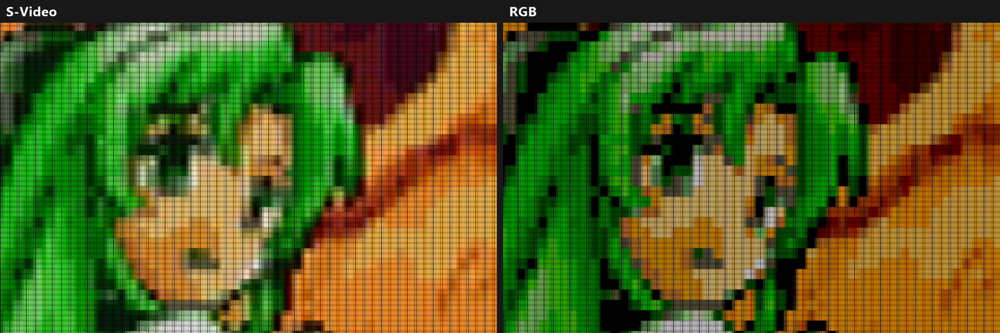
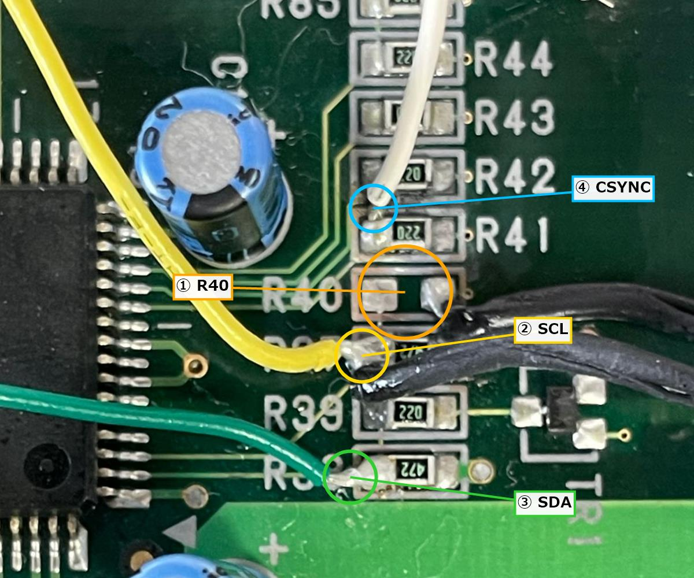
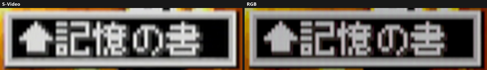

TVスワンを RGB 出力にする（基板の解析と改造の記録）

はじめての人は、先にやさしい案内をどうぞ。このページは、自分で作業する人、作業を引き受ける人のための、詳しい記録です。
バンダイの「TVスワン」は、ワンダースワンカラーの映像をテレビに映すための機器です。出力はコンポジットと S端子だけですが、基板に載っている映像エンコーダー IC は、もともと RGB 出力に対応しています。この記事は、その機能を使って RGB で映すまでの記録です。
同じことに挑戦する人が、遠回りをせずに済むように、分かったこと、つまずいた所、必要な物をまとめます。
先に結論
- RGB 出力は可能です。基板の改造は、チップ抵抗1個の交換と、線3本の追加だけです。
- 小さなマイコン（Raspberry Pi Pico）で、エンコーダーの設定を書き換えます。
- 映像は、既存の S端子と黄色の RCA 端子から、そのまま RGB として出ます。
- ただし、出てくる信号に癖があり、受け側（この記事では RetroTINK 4K）の設定で補う必要があります。
- 画質の差は「色の境目がにじまなくなる」ことです。白黒の輪郭は、S端子とほとんど変わりません。
改造を考えている人、依頼する人へ：先に知っておいてほしいこと
この改造をした TVスワンは、どの機器につないでも正しく映るわけではありません。 RGB で出てくる信号は、黒の基準がずれています（6 章）。筆者は、RetroTINK 4K の設定でこれを打ち消して、正しく映しています。黒レベルを細かく調整できない機器（ほかのアップスケーラーや、RGB 対応のモニターなど）では、暗く映る可能性が高いです。ほかの機器での映り方は、確かめていません。
基板の作業が正しくできても、手元の機器によっては、きれいに映らないことがあります。
お断り
- 貴重な機器への改造です。作業は自己責任でお願いします。
- 確認したのは、基板
552KA1401-R30 REVISION:6.0の1台と、RetroTINK 4K Pro（ファームウェア 1.99.12）の組み合わせだけです。ほかの基板の版や、ほかの機器で同じ結果になるかは、確かめていません。
1. TVスワンの中身
| 部品 | 型番 | 役割 |
|---|---|---|
| 本体 LSI | BANDAI SPGY-1002 SPHINX | ワンダースワンカラーの LSI そのもの |
| FPGA | Altera FLEX EPF10K30AQC208-3 | 液晶用の信号を受けて、テレビ用のタイミングに作り直す |
| 映像用メモリー | 日立 HM534251BJ-7 ×3 | 1画素 12 ビット（4096 色）を1画面ぶん溜める |
| 映像エンコーダー | OKI MSM7654 | デジタル映像をアナログ（コンポジット／S端子／RGB）に変える |
| 発振器 | 24.5454 MHz | 画素クロック 12.27 MHz（1ライン 780 画素） |
| 制御マイコン | 日立 HD64F3337YF（H8/3337） | 全体の制御 |
| 音声 DAC | ローム BU9480F | 音をデジタルで取り出してアナログにする |
| VR1 | 半固定抵抗 | エンコーダーの出力レベル（FS 端子）の調整 |
映像の流れは、次のとおりです。
- 本体 LSI が、液晶用の映像（224×144、約 75.47Hz）を出す
- FPGA が、それを映像用メモリーに書き込み、テレビのタイミング（59.94Hz）で読み出す
- FPGA からエンコーダーへ、赤・緑・青を4ビットずつ渡す
- エンコーダーがアナログ信号にして、端子へ出す
ここから分かることが2つあります。
- 色は、エンコーダーに入るまで、ワンダースワンカラーの 4096 色のままです。S端子のにじみは、最後のアナログ変換で生じています。
- 出力は 480i ですが、1フィールドにスワンの 144 ラインが 1:1 で入っています。中身は、実質 240p です。
なお、約 75Hz を約 60Hz に変換しているので、スクロール中に絵が上下で食い違う（帯が入る）ことがあります。これは TVスワンの仕組みによるもので、RGB にしても直りません。
2. RGB で出せる理由
エンコーダー MSM7654 は、出力を「S端子とコンポジット」か「RGB」かで切り替えられます。RGB にすると、3本のアナログ出力の中身が入れ替わります。
| IC のピン | 通常 | RGB のとき | 基板上の端子 |
|---|---|---|---|
| 62番 YA | 輝度（Y） | 赤 | S端子の Y |
| 60番 CVBSO | コンポジット | 緑 | 黄色の RCA |
| 58番 CA | 色（C） | 青 | S端子の C |
つまり、切り替えさえできれば、今ある端子からそのまま RGB が出ます。 出力回路は3系統とも同じ構成（抵抗、ダイオード、電解コンデンサーだけ）で、部品の交換は要りません。
ピンでは切り替わらない
IC には、切り替え用のピン（47番 OUTSEL）があります。このピンは基板上でどこにもつながっていませんが、3.3V を当てても切り替わりません。
理由は、基板が起動時に、I2C でエンコーダーへ設定を書き込んでいて、その中に「ピンの設定を無視して、レジスターの設定を使う」という指定が入っているためです。
電源を入れて約3〜5秒後に、次の4つが1回だけ書き込まれます（I2C アドレスは 7 ビットで 0x44）。
| レジスター | 値 | 意味 |
|---|---|---|
| MR0（0x00） | 0x96 | レジスターの設定を優先／RGB 入力／NTSC 12.27MHz |
| MR1（0x01） | 0x08 | マスター動作／S端子・コンポジット出力 |
| CR0（0x02） | 0x01 | |
| CR1（0x03） | 0x00 | 輝度 100% |
RGB にするには、このあとで MR1 に 0x18 を書きます（0x08 に、出力切り替えのビット4を足した値）。基板は書き直しをしないので、1回書けば、電源を切るまで RGB のままです。
このエンコーダーのレジスターは、書き込み専用です。読み出せないので、上の値は、通信を横から記録して調べました。
3. 必要な物
| 品物 | 用途 |
|---|---|
| Raspberry Pi Pico（無印で可） | エンコーダーの設定を書き換える |
| チップ抵抗の代わりの 470Ω 抵抗 1本 | 基板の R40 と交換する |
| 細い配線材（AWG28 前後） | 基板と Pico をつなぐ |
| ショットキーダイオード（1N5819 など） | Pico の電源を基板から取る場合 |
| HD15（VGA）オスの端子台、S端子ケーブル、RCA ケーブル | RGB 用のケーブルを作る |
| はんだごて、フラックス、テスター、無水エタノール | 作業と確認 |
受け側の機器は、緑の信号に重ねた同期（シンク・オン・グリーン）を受けられて、黒レベルとゲインを細かく調整できる物が必要です（理由は 6 章）。
4. 基板の改造
4.1 R40 を 470Ω に交換する
Pico が I2C に割り込むには、通信の2本の線（SDA と SCL）を、Pico 側から Low に引ける必要があります。ところが、SCL は基板側が強く駆動していて、そのままでは引けません。
SCL の途中にある直列抵抗 R40（22Ω）を、470Ω に交換します。これで、基板自身の通信はそのまま通り、Pico も線を引けるようになります。
- 基板のチップ抵抗の「220」という印字は、220Ω ではなく 22Ω です（「22 に 0 を 0 個」の意味）。
- 交換する前に、テスターで R40 の両端が約 22Ω であることを確かめてください。
4.2 線を3本つなぐ
| 信号 | 基板側 | Pico 側 |
|---|---|---|
| SDA | R38 の IC 側のパッド | GP0 |
| SCL | R37 の IC 側のパッド（R40 の IC 側と同じ線） | GP1 |
| GND | 近くの GND | GND |
IC の細いピンに直接はんだ付けする必要はありません。相手は、すべて抵抗のパッドです。

| 写真の番号 | 場所 | やること |
|---|---|---|
| ① | R40 | チップ抵抗（22Ω）を外し、同じ位置に 470Ω を入れる。写真では、足つきの抵抗を、R40 の右のパッドと、②のパッドのあいだにつないでいる（R40 の左のパッドと②は、基板の上でつながっている） |
| ② | R37 の IC 側のパッド | SCL。Pico の GP1 へ（黄色の線） |
| ③ | R38 の IC 側のパッド | SDA。Pico の GP0 へ（緑の線） |
| ④ | R41 の IC 側のパッド | 同期信号（CSYNC）。同期を緑に重ねる方式なら、使わない |
R37 と R38（印字「472」）は、通信線を 3.3V に引き上げる 4.7kΩ の抵抗です。R39 と R40（印字「220」）が、通信線の途中に入っている 22Ω の抵抗です。
4.3 つまずいた所
実際に時間を取られたのは、解析よりも、はんだ付けの不具合でした。
- 焦げた熱収縮チューブは、電気を通します。 こての熱で焦げたチューブが炭になり、隣のパッドとのあいだで、数百Ωの漏れを作りました。症状は「通信が、通ったり通らなかったりする」「絵が白黒になる」などで、原因が分かりにくいです。チューブは、はんだ付けの前に縮めておき、こてを当てる時間を短くしてください。漏れが疑わしいときは、無水エタノールと爪楊枝で、パッドのあいだを掃除します。
- 導通チェックの「ピー」は、数百Ωの漏れでは鳴りません。 抵抗値で測ってください。正常な状態では、SDA と SCL のあいだは約 8.4kΩ でした。
- 細い線は、動かすたびに根元で外れかけます。 線は、はんだ付けの近くでテープなどで固定します。
- Pico に電源が入っていない状態で、TVスワンを起動しない。 つないだ線が通信を邪魔して、初期設定が届かなくなります。先に Pico、あとから TVスワンの順です。
- 45番ピン（TENB）には触れない。 テスト用のピンで、電圧を当てると映像が消えます。
5. Pico のプログラム
MicroPython で動かしています。やることは単純です。
- TVスワンの電源が入るのを待つ（通信線が High になる）
- 基板の初期設定の通信が終わるのを待つ
- 次の2つを書く
CR0 (0x02) = 0x41 # 緑の信号に、同期を重ねる
MR1 (0x01) = 0x18 # RGB 出力にする
元に戻すときは、MR1 に 0x08、CR0 に 0x01 を書きます。TVスワンの電源を入れ直しても、元に戻ります。
プログラムは、次の2つのファイルです。Pico に MicroPython を入れて、この2つを中にコピーすると、電源が入るたびに自動で動きます。
プログラムは、MIT ライセンスで公開します（作者：BW）。自由に使い、直し、配ることができます。無保証です。全文は LICENSE.txt にあります。
確認した環境は、Raspberry Pi Pico（RP2040）と MicroPython v1.29.0 です。Pico の LED は、RGB に切り替えたあとに点灯し、書き込みに失敗しているあいだは、速く点滅します。
同期信号について
RGB では、同期信号を別に用意する必要があります。方法は2つあります。
- 緑に重ねる（CR0 のビット6）：追加の配線が要りません。この記事では、こちらを使っています。
- 専用の出力（11番ピン CSYNC）を引き出す：基板の R41 から取れます。RetroTINK 4K では、この信号でも同期できました。
作業後の確かめ方
映像を見る前に、次の順で確かめると、原因の切り分けが楽になります。
電源を切った状態で（テスターの抵抗レンジ）
| 測る場所 | 正しい値 |
|---|---|
| 入れ替えた 470Ω の両端 | 約 470Ω |
| SDA と SCL のあいだ（②と③） | 約 8.4kΩ（筆者の基板での実測） |
| SCL（②）と、CSYNC（④） | つながっていない |
SDA と SCL のあいだが、数百Ωしかない場合は、はんだの橋か、焦げ跡による漏れがあります。
電源を入れた状態で
- Pico をつながずに、TVスワンを起動する。今までどおり、S端子で映ること。 映らない、または白黒になる場合は、R40 のまわりの作業を見直します（基板の初期設定が、エンコーダーに届いていません）。
- ②（SCL）と、R40 の右のパッドの電圧を測る。どちらも約 3.3V なら正常です。②だけ低い場合は、②の側で漏れています。
- Pico をつなぎ、先に Pico に電源を入れてから、TVスワンを起動する。数秒後に Pico の LED が点灯すれば、書き込みは成功です。
- LED が速く点滅する場合は、エンコーダーが応答していません。線の接続と、1・2 を確かめます。
設定値を確かめたい場合
I2C の通信を記録できる道具（ロジックアナライザーなど）があれば、起動時に、2 章の表の4つの値が流れることを確かめられます。ほかの版の基板では、値が違うかもしれません。RGB に切り替える値は、「その基板が書いている MR1 の値に、0x10 を足した物」です。
6. 一番の難所：そのままでは真っ暗に映る
RGB に切り替えただけでは、絵がほとんど真っ黒になり、文字の輪郭だけが、うっすら見える状態になりました。
原因は、信号の形にありました。1ライン（63.56 マイクロ秒）の波形を実測した結果です。同期の始まりを 0 とします。
| 区間 | S端子・コンポジット出力 | RGB 出力 |
|---|---|---|
| 同期パルス | 0 〜 4.5 | 0 〜 4.5 |
| 同期のあとの黒（バックポーチ） | 4.5 〜 9.4（約 4.9） | 4.5 〜 5.0（約 0.5） |
| 絵の始まり | 9.4 から | 5.5 から |
TVスワンの絵は、白い外枠（WonderSwan Color のロゴ入り）が、ラインの端から端まであります。S端子やコンポジットでは、エンコーダーが規格どおりの幅で前後を黒く切り取りますが、RGB 出力では、その切り取りが働かず、同期パルスの直後から白い外枠が出ます。
映像機器は、同期の直後を「黒」の基準にします。そこが白なので、白を黒と取り違え、絵全体が黒より下に沈みます。
赤・緑・青の信号そのものは、正常です。 出力回路の不具合でも、エンコーダーの不具合でもありません。
受け側の設定で補う
基準のずれ方は一定なので、受け側の設定で打ち消せます。RetroTINK 4K での設定例です。
| 画面 | 項目 | 値 |
|---|---|---|
| 入力 | HD-15 の RGsB | |
| RGB/Component ADC | Pre-ADC | −0.7 |
| Gain（R・G・B） | 約 1.9 | |
| Offset（R・G・B） | +100 | |
| Color Correction | Input Lift | −0.72 |
| Input Gain | 3.40 | |
| Saturation | +0.20 | |
| Deinterlacer | Algorithm | Motion Adaptive |
| Scaling/Crop | Top／Bottom／Left／Right | −33／−35／−217／−203 |
- Offset を最大にして、沈んだ絵を引き上げ、Color Correction で濃淡を引き伸ばします。
- Pre-ADC を上げすぎると、暗い側が切り捨てられて、面がつぶれます。
- デインターレースを Bob にすると、数秒おきに、絵が1ラインぶん上下に動きました。Motion Adaptive で止まります。
この方法は、黒レベルを自由に動かせる機器でないと使えません。ほかの機器で試す場合は、同期のあとの約 5 マイクロ秒を黒にする回路を足す、同期信号を約 5 マイクロ秒早める、といった対策が必要になるはずです（どちらも、筆者は試していません）。
7. ケーブル
S端子と黄色の RCA 端子から、HD15 へつなぎます。
| TVスワン側 | 信号 | HD15 |
|---|---|---|
| S端子の Y（3番ピン） | 赤 | 1番 |
| 黄色の RCA の中心 | 緑＋同期 | 2番 |
| S端子の C（4番ピン） | 青 | 3番 |
| 各ケーブルのシールド | GND | 6・7・8番 |
ネジ止め式の HD15 端子台を使えば、はんだ付けなしで作れます。
8. 画質はどう変わるか
どの画像も、左が S端子、右が RGB です。2560×1440 で取り込んだ画面の一部を、2倍に拡大しています。



| 見る所 | S端子 | RGB |
|---|---|---|
| ドットの輪郭 | 角が丸く、にじむ | 1ドットずつ、角が立つ |
| 色の境目 | 隣の色に引きずられる | きっぱり分かれる |
| 白黒の文字の輪郭 | ほぼ同じ | ほぼ同じ |
S端子は、明るさの信号はもともと細かく通します。弱いのは色だけです。そのため、差が出るのは、色と色が接する所です。液晶の画素を再現する効果（RetroTINK 4K の LCD Mono など）を入れると、ドットが格子にきちんと収まるぶん、差が大きく見えます。
期待しすぎないほうが良い点もあります。
- TVスワンの中で、絵が一度なめらかにされてから出てくるので、エミュレーターのような硬い輪郭にはなりません。
- 黒レベルを受け側で補っているぶん、使える明るさの段階は少なめです。
- 75Hz→60Hz の変換による動きの乱れは、変わりません。
9. まだ分かっていないこと・これから書き足すこと
-
Pico を本体に組み込む方法（電源を基板から取る、S端子と RGB を切り替えるボタンを付ける）。今は、Pico を USB の電源で動かして確かめた段階です。組み込みを終えたら、実際の配線と写真で書き足します。
-
ほかの基板の版で、同じ値・同じ場所が使えるか
- RetroTINK 4K 以外の機器での映り方
- エンコーダーの BLANK 入力（14番ピン）を外から動かして、RGB 出力の帰線期間を黒にできるか
- デインターレースを Bob にしたときに、絵が上下に動く原因
付録：解析に使った方法
- I2C の記録：Pico の GPIO を高速に読み、線の変化を記録して、パソコンで解読しました。
- 波形の測定：Pico の ADC を 2 マイクロ秒おきに連続で読み、ライン周期で重ね合わせて、1ラインの波形を復元しました。オシロスコープがなくても、同期や黒レベルの位置が分かります。
- データシート：OKI MSM7654（1999 年版）。